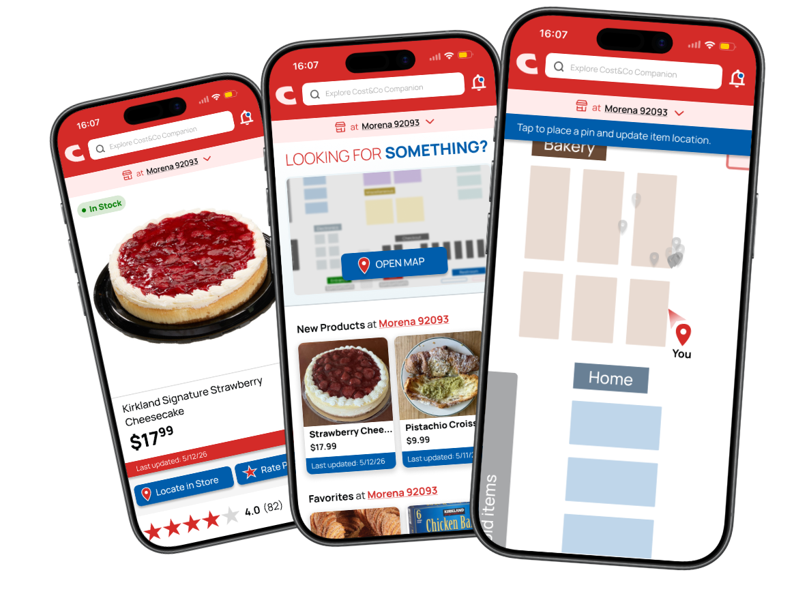

Cost&Co Companion App
Spring 2026A community-driven app that reduces Costco shopping stress through real-time navigation, product locations, and inventory insights
Product Designer

A community-driven app that reduces Costco shopping stress through real-time navigation, product locations, and inventory insights

Overhaul of the Itacho Sushi restaurant's digital presence and customer experience

Designing accessible gameplay features focused on inclusive movement tracking and dexterity-friendly interactions

Redesigning the Steam mobile app to optimize discoverability pathways and solve navigation bottlenecks

NASA's X-59 Quiet Supersonic Project

Designing a physical kiosk interface built to bridge information access for unhoused populations seeking local essential resources

Redesigning the Tastea website to improve user experience